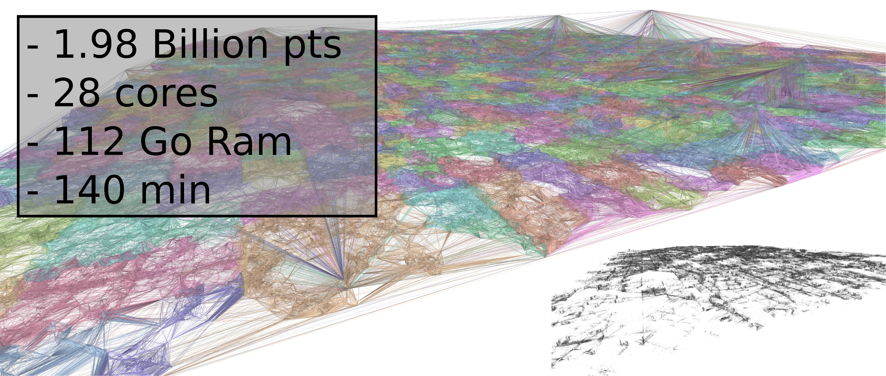

Laurent Caraffa
73 avenue de Paris · 94165 Saint-Mandé CEDEX · (+33)1 43 98 73 61 ·
laurent.caraffa@ign.fr
Researcher in Geographic information science, Computer Vision, Teledetection, Lasergrammetry, and Big data.
Chargé de recherche à l'IGN en sciences de l'information géographique, vision par ordinateur, télédétection, Lasergrammétrie et reconstruction de surface et BigData.
Research Interests
Sujets de recherche

Big data / Spark-hadoop
Big data / Spark-hadoop
News
Actualités
-
08/12/19: Miloud Mezian's PhD Thèse de Miloud Mezian
Big Data 2019 conference
Participation à la conférence Big Data 2019
Experience
-
2010-2013
PhD student
Doctorant
PhD on stereoreconstruction under bad weather conditions
Thèse posrtant sur la reconstruction par paire stéréoscopiques en conditions dégradées
-
2014-2016
PostDoc
Post Doctorat
After my PhD, I did a 2 years post-doc at IGN France on surface reconstruction.
Après ma thèse, j'ai effectué un post-doc à l'IGN sur la problématique de reconstruction de surface.
-
2016-
Permanent researcher
Chargé de recherche
permanent researcher at IGN France on photogrammetry and big data.
Chargé de recherche à l'IGN en photogrammetrie et Big-data.
Publications
[ACL] Journals
[ACLN] Journals
[ASCL] Others
[ACTI] Conferences
[ACTN] Conferences
[COM] Conferences
[OS] Books and Chapters
[DO] Books and Chapters
[AFF] Posters
[AP] Preprints
[TH] Dissertations
[INV] Invited Talks
[PV] Popularization
Supervisions
PhDs Thèses
- Stéphane Guinard (Université Paris Est-MSTIC PhD since 2017), co-supervised with Loïc Landrieu (STRUDEL, LASTIG, IGN): Simplicial complexes reconstruction co-supervisée avec Loïc Landrieu (LASTIG/STRUDEL, IGN): Reconstruction de complexes simpliciaux
Post docs
-
Pierre Rolin
advised by
encadré par Cyrielle Guérin, 2017
Watertight surface reconstruction from satellite imagery Reconstruction de surfaces étanches à partir de données satellite
Other research activities Autres activités de recherche
Teaching Enseignement